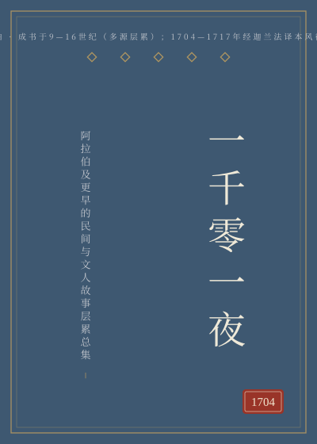
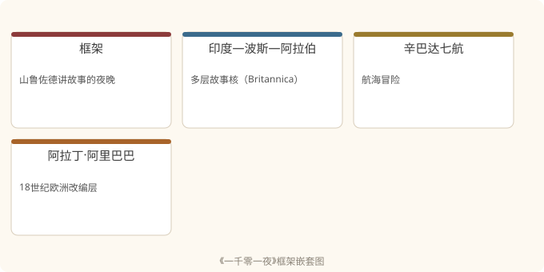

一千零一夜
一、基本信息
| 作者 | 阿拉伯及更早的民间与文人故事层累总集（作者不可考） |
|---|---|
| 成书/出版 | 最早见于9世纪残篇（Britannica）；迦兰法译本1704—1717年使其风行欧洲（Britannica） The Thousand and One Nights — Encyclopaedia Britannica（百科全书） |
| 国别/地区 | 阿拉伯 |
| 时代 | 近代 · 成书于9—16世纪（多源层累）；1704—1717年经迦兰法译本风行欧洲 |
| 体裁 | 故事集 |
| 语言 | 阿拉伯语（多源） |

《一千零一夜》框架嵌套图（主题·结构图）
二、创作背景
Britannica：'collection of largely Middle Eastern and Indian stories of uncertain date and authorship'——源流多层的东方故事总集。
框架（Britannica）：国王山鲁亚尔因妻不忠而每日娶杀一女；宰相之女山鲁佐德（Scheherazade）'devised a scheme to save herself and others'——每晚讲故事留悬念，'he puts off her execution from day to day and finally abandons his cruel plan'。
三、内容脉络
框架故事：讲故事=活命——叙事的自我指涉（Britannica）。
故事层：'the frame story is probably Indian'，故事来自 India, Iran, Iraq, Egypt, Turkey, and possibly Greece（Britannica）。
著名篇目：阿拉丁、阿里巴巴、辛巴达——'added to the collection only in the 18th century in European adaptations'（Britannica）。
迦兰首译：Les Mille et Une Nuits，12卷（1704—17），'remained standard until the mid-19th century'（Britannica）。
四、主要人物表
| 人物 | 身份 | 说明 |
|---|---|---|
| 山鲁佐德 | 宰相之女 | 以故事续命（Britannica） |
| 山鲁亚尔 | 国王 | 杀妻的暴君（Britannica） |
| 辛巴达 | 航海家 | 七次航行（通说） |
五、主题与艺术特点
- 讲故事与生存：悬念即生命（Britannica 语境）。
- 多层文明的互嵌：印度框架+波斯/阿拉伯故事核（Britannica）。
- '一千'只是虚指：'expressions……were intended merely to indicate a large number'（Britannica）。
六、影响与评论
- Britannica：阿拉丁、阿里巴巴、辛巴达的故事'have almost become part of Western folklore'（几乎成为西方民俗的一部分）。
The Thousand and One Nights — Encyclopaedia Britannica（百科全书） - Britannica：迦兰1704—1717年首译为欧洲标准译本直至19世纪中叶——欧洲浪漫主义的东方想象之源（通说待核）。
The Thousand and One Nights — Encyclopaedia Britannica（百科全书）
七、阅读建议
难点
- 版本谱系：勿把18世纪欧洲添加层当作'原典'。
- 框架与嵌套的层级。
- 纳训译本（人民文学出版社，通说待核）。
- 李唯中译本（花城出版社，通说待核）。
先读框架故事+辛巴达 → 阿里巴巴/阿拉丁（注意18世纪层）→ 自选故事。
八、待核实
- 六种连续形态（8—16世纪，Baghdad/Egypt 层）细节核对。
- 纳训/李唯中译本信息核对。
- 《阿拉丁》故事原无阿拉伯手稿本的确认（Britannica 已载）展开核对。